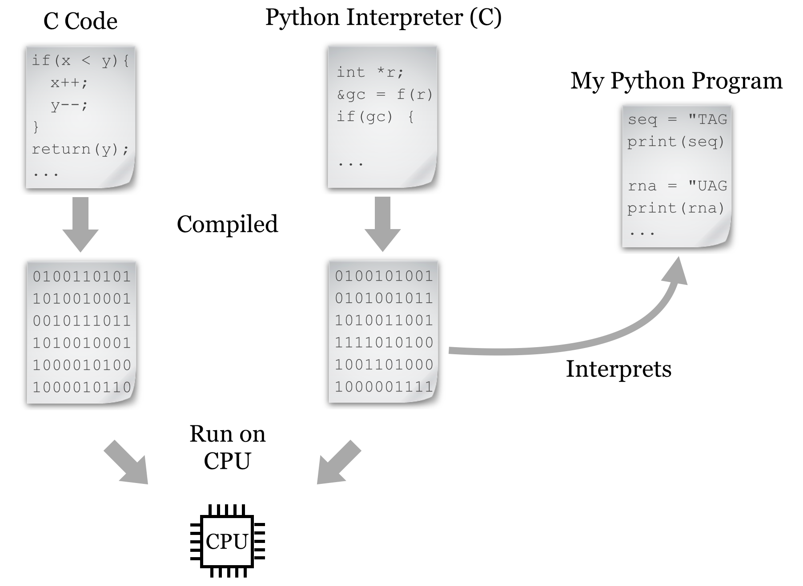
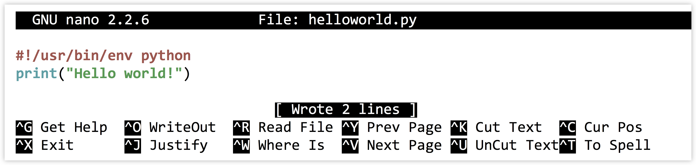

Chapter 13 Hello, World
Before we begin with programming in Python, it is useful to consider how the language fits into the landscape and history of similar languages. Initially, computer programming was not far removed from the hardware on which it was being coded. This meant writing “bytecode”—or its human-readable equivalent, assembly code—that explicitly referenced memory (RAM) locations and copied data to and from the relatively small number of CPU registers (the storage units directly accessible by the CPU). Unfortunately, this meant that code had to be rewritten for each of the many types of CPUs. Later, more portable languages like C were developed. These languages still work close to the hardware in many ways; in particular, the programmer must tell the computer how it should allocate and de-allocate memory from RAM. On the other hand, some abstraction provides higher-level coding constructs that are not specific to CPU type. This code is then compiled into bytecode by a compiling program for each specific CPU (as discussed in previous chapters, we had to compile some software from source to install it). The result is a fast and often optimized program that frees the programmer from having to worry about the huge variety of CPU types.
Later, some programmers decided that they didn’t want to have to worry about specifying how RAM space should be allocated and de-allocated. They also wanted more features built into their languages to help them quickly architect complicated programs. One of the languages meant to accomplish these goals is Python, a project started in 1988 by mathematician, computer scientist, and Monty Python fan Guido van Rossum.31 “High-level” languages like Python and R (covered in later chapters) provide many built-in features to the programmer, and they are even more abstract than languages like C.
Unfortunately, because of the added abstractions, languages like Python can’t easily be compiled (like C can) to be run directly on the CPU.32 In fact, these languages are not run the same way compiled or assembly programs are: they are interpreted by another program that is written in a compiled language like C and runs on the CPU. So, a Python “program” is just a text file of commands that are interpreted by another program that is actually interacting with the CPU and RAM.

The added ease and flexibility of interpreted languages generally comes at a cost: because of the extra execution layer, they tend to be 2 to 100 times slower and use 2 to 20 times more memory than carefully constructed C programs, depending on what is being computed. These languages are significantly easier to use, however, and we can get our ideas into code far more quickly.
Work on the Python language and interpreters for it has progressed steadily since the 1990s, emphasizing a “one best way” approach. Rather than providing multiple versions of basic commands that do the same thing, Python provides as few commands as possible while attempting to not limit the programmer. Python also emphasizes code readability: most syntax is composed of English-like words, shortcuts and punctuation characters are kept to a minimum, and the visual structure of “blocks” of code are enforced with indentation.
For these reasons, Python use has grown significantly in recent years, especially for bioinformatics and computational biology. The emphasis on readability and “one best way” facilitates learning, particularly for those who are brand-new to programming.33 Most importantly, Python allows us to focus on the concepts of programming without struggling through an abundance of choices and confusing syntax, and new programmers can frequently read and understand code written by others. Finally, Python incorporates a number of modern programming paradigms making it appropriate for both small tasks and larger software engineering projects—it’s an official language at Google (along with C++ and Java), and it’s taught in introductory courses at Johns Hopkins University, New York University, the Massachusetts Institute of Technology, and many others.
All of this isn’t to say that any programming language is devoid of quirks and difficulties. We’ll only be covering some of what Python offers—the parts that are most basic and likely to be found in many languages. Topics that are highly “Pythonic” will be highlighted as we go along.
Python Versions
In this book we will be working with Python version 2.7; that is, we’re going to assume that the Python executable found in your $PATH variable is version 2.7 (perhaps 2.7.10, which is the last of the 2.7 series as of 2015). You can check this by running python --version on the command line. While newer versions are available (up to 3.4 and higher), they are not yet universally used. These newer versions change some syntax from 2.7. For many of the concepts introduced in this book, if you stick with the syntax as shown, your code should be compatible with these newer versions as well, but possibly not backward-compatible with older versions such as 2.5 or 2.6. This is an unfortunate artifact of Python’s “one best way” philosophy: on occasion, the Python designers change their minds about what the best way is!
To give an example, the print function print("hello there") works in Python versions 2.6, 2.7, 3.0, 3.1, and so on, whereas the keyword version print "hello there" (notice the lack of parentheses) would only work in versions 2.6 and 2.7. In some cases where differences in behavior would occur in later versions, we’ll note them in footnotes.
Hello, World
Because we’re working in an interpreted language, in order to write a program, we’ll need to create a file of Python code, and then supply it as input to the interpreting program. There are a few ways to do this: (1) use an interactive graphical environment like Jupyter notebook; (2) run the interpreter ourselves on the command line, giving the file name containing our code as an argument; or (3) making the code file an executable script in the command line environment using #! syntax.
Jupyter Notebook
For those wishing to program Python without working on the command line, a variety of graphical environments are available. A typical installation of Python from http://python.org includes the “Idle” code editor. One of the nicer alternatives to this default is known as Jupyter, which runs in a web browser allows the programmer to interleave sections of code and documentation.
Installing Jupyter requires that Python already be installed (from http://python.org), and then requires using the command line terminal in Linux, OS X, or Windows; see http://jupyter.org/install for details. Once installed, it can be started from the command line by running jupyter notebook:
[soneil@mbp ~]$ jupyter notebook
The Jupyter interface will open in the default desktop web browser, showing the list of folders and files in whatever directory the command was run from.

Clicking the “New” button, followed by “Python Notebook” will create a new notebook document composed of “cells.” Cells in a notebook can contain human-readable text (as documentation) or lines of Python code. Whether the text in the cell is interpreted as code or text depends on the choice made in the “Cell” menu.
Each cell may be “executed” by clicking on the “Play” button; doing so causes text cells to change to a nicely formatted output, and executes lines of code for code cells. But beware: the output of a given cell often depends on what other cells have been executed and in which order (see the “Cell output depends on the order of execution” cell in the figure below).

For this reason, I highly recommend making the assumption that all code cells will be executed in top-to-bottom order, which can be accomplished by selecting “Run All” from the “Cell” menu whenever you want to execute any code. Doing so causes all the cells to be re-executed each time it is run, it but has the advantage of ensuring the correctness of the overall notebook as changes are made to cells over time.
Specified Interpreter
As convenient as notebooks are, because the previous part of this book focused on the command line, and Python interfaces quite nicely with it, the examples here will be from the command line environment. Because Python programs are interpreted scripts, we can manually specify the interpreter on the command line each time we run such a script.
For this method, we first have to edit a code file that we’ll call helloworld.py (.py is the traditional extension for Python programs). On the command line, we’ll edit code files with our text editor nano, passing in a few extra parameters:
[soneil@mbp ~]$ nano -w -i -E -T 4 helloworld.py
The -w tells nano not to automatically wrap long lines (we’re writing code after all, not an essay), -i says to automatically indent newlines to the current indentation level, -T 4 says that tab-stops should be four spaces wide, and -E says that tabs should be converted to spaces (four of them). This usage of four spaces per indentation level is widely agreed upon by the Python community as being easy on the eyes. (“One best way,” remember?) We’ll put a simple call to the print() function in the file:

As usual, Control-o saves the file (press Enter if prompted about the file name) and Control-x exits nano. Next, to run it, all we need to do is call the Python interpreter on the file:
[soneil@mbp ~]$ python helloworld.py
Hello world!
Success! We’ve written our first Python program!
Making the File Executable
An alternative method is to make the code file an executable script. First, we have to edit the code file to include a special first line:

For this method to work, the first two characters of the file must be #! (in fact, the entire line needs to be replicated exactly); although nano is displaying what looks to be a blank line above our #! line, there isn’t really one there.
In chapter 5, “Permissions and Executables,” we discussed the #! line as containing the absolute path to the interpreter, as in #!/usr/bin/bash for bash scripts. In this case, we are specifying something slightly different: #!/usr/bin/env python. The env program, among other things, searches for the installed location of the given argument and executes that. A #! line like this will cause a Python program to be successfully executed, even if it is installed in a nonstandard location. (One may ask if env is ever installed in a nonstandard location. Fortunately, it is rare to find env located anywhere other than in /usr/bin.)
Next, we need to exit nano and make the file executable by using the chmod utility, and finally we can run it with ./helloworld.py. This specifies that the program helloworld.py should be run and that it exists in the current directory (./).
[soneil@mbp ~]$ ls
helloworld.py
[soneil@mbp ~]$ chmod +x helloworld.py
[soneil@mbp ~]$ ./helloworld.py
Hello world!
Configuring and Using nano
Generally, you won’t want to type nano -w -i -E -T 4 ... every time you want to edit a Python code file. Fortunately, nano can be configured to automatically use these options if they are specified correctly in a file called .nanorc in your home directory. But this may not be the best choice, either: when editing files that are not Python code, you likely don’t want to convert all your tab entries to spaces. Instead, you may want to define a shell alias called nanopy specifically for editing Python code. To have this shell alias preserved for each login session, the relevant code would need to be added to your .bashrc (assuming your shell is bash):
[soneil@mbp ~]$ echo "alias nanopy='nano -w -i -E -T 4 ' >> ~/.bashrc"
If you are going to perform the above, double-check that the command is exactly as written. After logging out and back in, you can edit a Python code file with the alias using nanopy helloworld.py.
As evident from the code sample above, nano can also provide syntax highlighting (coloring of code for readability) if your $HOME/.nanorc and related files are configured properly, though it isn’t necessary for programming.
Don’t forget that it is often useful to have multiple terminal windows open simultaneously. You can use one for editing, one for running your program and testing, and perhaps a third running top, displaying how much CPU and RAM your program is using.
Although not as powerful as more sophisticated text editors such as emacs or vim, nano is easy to use and includes a number of features such as editing multiple files, cutting and pasting within and between files, regular-expression-based search and search/replace, spell check, and more. While editing, nano can also take you directly to a line number (Control–-), which will come in handy when you need to go directly to a line that caused an error.
Whatever editor you choose to use, reading some documentation will help you be much more productive. For the rest of our code samples, we’ll be showing screenshots from within vim, primarily because it provides prettier syntax highlighting.
Exercises
- Create a file of Python code on the command line containing a simple
print("Hello!")statement. Execute it by specifying the interpreter. If you are running iPython notebook, try to create a similarly simple notebook and execute the cell. - Create a file of Python code, make it an executable script, and execute it. Does that work? Why or why not?
- Determine which version of Python you are running (perhaps by running
python --version). Test to see which versions of print work for you:print("Hello!")orprint "Hello!". (The former is much preferred.)
The history of computing is full of twists, turns, and reinvention of wheels. LISP, for example, is a language that incorporates many of the same high-level features as Python, but it was first developed in 1958!↩︎
On the other hand, ambitious programmers are currently working on projects like Cython to do exactly this.↩︎
Many believe that the best way to learn programming is in a hardware-oriented fashion with assembly or a language like C. This is a legitimate philosophy, but for the intended audience of this book, we’ll stick with the higher-level languages Python and R.↩︎